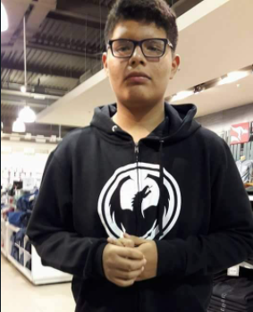
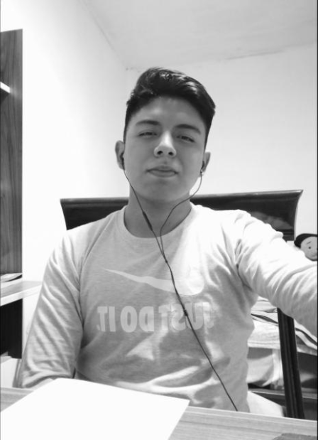
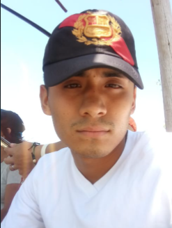
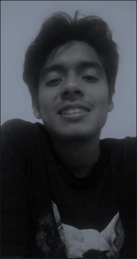

Andre Ragui Huamantinco Guillen
19 años
Fecha de nacimiento: 15/12/2002
Correo electronico: ahuamantinco@unprg.edu.pe.
Actividad principal: Estudios de Pregrado en Ingeniería de Sistemas en la
Universidad Nacional Pedro Ruiz Gallo.
Hobbies:
- Ver series peliculas.
- Jugar videojuegos.
- Leer comics y novelas.
Descripción: Soy una persona alegre y dedicada, comprometida con la toma de
nuevos retos y proyectos que me permitan crecer tanto personal como
profesionalmente. Todo ello en busqueda de una versión cada vez mejor de mi
mismo.

Jhonathan Fernando Aldana Gonzales
19 años
Fecha de nacimiento: 13/02/2003
Correo electronico: jaldanag@unprg.edu.pe
Actividad principal: Estudios de Pregrado en Ingeniería de Sistemas en la
Universidad Nacional Pedro Ruiz Gallo.
Hobbies:
- Ver streams.
- Ver películas.
- Jugar videojuegos.
Descripción: Soy una persona responsable y alegre, con muchas expectativas en la
vida; que busca seguir mejorando como persona.

Peter Robert Castro Lizana
22 años
Fecha de nacimiento: 21/10/1999
Correo electronico: pcastrol@unprg.edu.pe
Actividad principal: Estudios de Pregrado en Ingeniería de Sistemas en la
Universidad Nacional Pedro Ruiz Gallo.
Hobbies:
- Jugar league of legens.
- Practicar basquet.
- Hacer apuestas deportivas.
Descripción: Soy una persona tolerante, amigable, leal, respetuoso. Mido 1.70 m
de tes trigeña y de contaxtura delgada. Mis expectativas para la vida son muy
altas ya que tengo las cualidades necesarias para cumplir con cualquier reto que
se presente.

Luis Enrique Villareal Ballona
19 años
Fecha de nacimiento: 16/09/2002
Correo electronico: lvillareal@unprg.edu.pe
Actividad principal: Estudios de Pregrado en Ingeniería de Sistemas en la
Universidad Nacional Pedro Ruiz Gallo.
Hobbies:
- Jugar futbol
- Practicar freestyle
- Jugar videojuegos
Descripción: Me considero una persona responsable, tranquila, muy calmada y poco expresiva.
Tengo muchas ganas de salir adelante y ayudar a mi familia